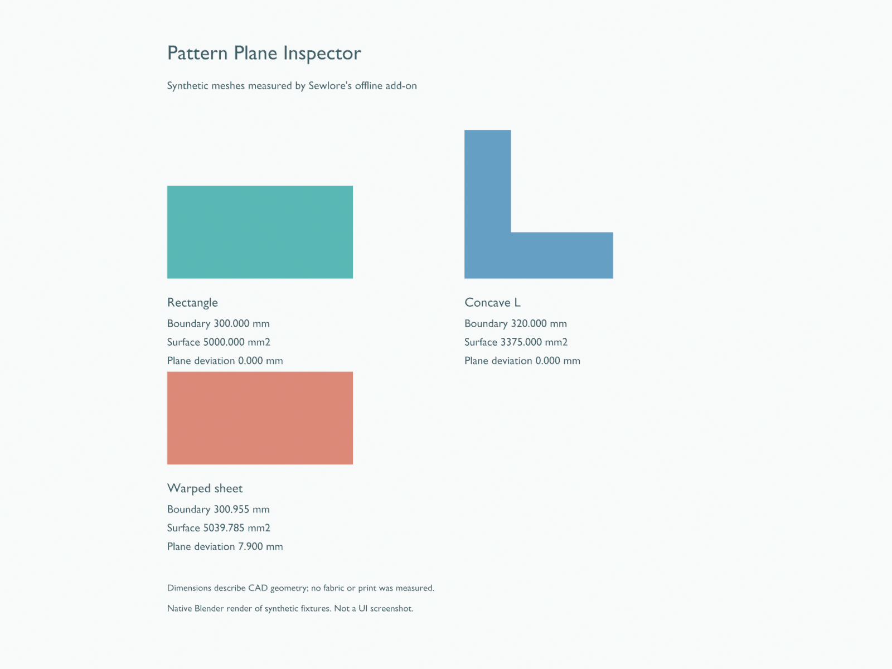

Sewlore · offline geometry inspection · version 0.1.0
Pattern Plane Inspector
Measure the boundary, native tessellated surface area and reference-plane deviation of selected pattern meshes. The extension respects scene Unit Scale, world transforms and an optional evaluated-modifier view. It runs locally without telemetry, external services or additional Python packages.
Install and measure
- In Blender Preferences → Get Extensions, choose Install from Disk and select the ZIP. Enable the extension.
- Set Scene → Units → Unit Scale intentionally. One scene unit is treated as that many metres, including when the unit system is None.
- Select surface mesh objects in Object Mode. Open the 3D Viewport sidebar → Measurement → Pattern Plane Inspector.
- Choose mm, cm or inches; set the flatness tolerance and whether modifiers should be evaluated. Choose Inspect Selected Meshes.
- Reinspect after geometry, transform, modifier, Unit Scale or tolerance changes. Changing the display unit converts the stored result.
What the values mean
| Value | Method |
|---|---|
| Boundary | World-space lengths of edges belonging to exactly one face. Hole outlines and disconnected outlines are included; interior face edges are excluded. |
| Surface area | World-space areas of Blender's native loop triangles. Concave faces are tessellated natively; the result is not a bounding rectangle estimate. |
| Plane deviation | Maximum vertex distance from the plane of the largest world-space triangle. This is a reference-plane diagnostic, not a best-fit plane. |
| Display units | Exactly 25.4 mm per inch. Area conversion uses the squared length factor. |

A simple independent check
Create a 100 × 50 rectangular face and set Unit Scale to 0.001. Without object scaling, the expected boundary is 300 mm and area is 5,000 mm² (50 cm²). Applying an unapplied object scale of 2 on X and 3 on Y should give 700 mm boundary and 30,000 mm² area.
Read warped surfaces cautiously
An outside-tolerance surface still reports its triangulated surface area. That result is not a flat fabric area. Closed volumes, loose geometry, duplicate faces, non-manifold edges and degenerate triangles are rejected. Results are per object; overlapping pieces are not unioned. Self-intersections and physically distorted printing or fabric are not assessed.
Native verification
The exact ZIP passed the official extension builder and validator plus 26 checks in Blender 5.2.2 LTS on Windows. Tests used native package installation and enabling, exact installed-byte checks, native mesh APIs, the registered measurement operator and native uninstall. Cases include scene units, squared conversions, arbitrary rotations, nonuniform and negative scale, parent-induced shear, concave faces, holes, disconnected surfaces, modifiers and invalid geometry. Interactive panel appearance and other Blender versions were not tested.
Source and maintenance
The source is GPL-3.0-or-later. The ZIP includes only the Python source, manifest, licence and instructions; no binary assets are bundled. Build and validate with Blender's documented extension CLI. This is an independent Sewlore resource; it does not imply endorsement by Blender.